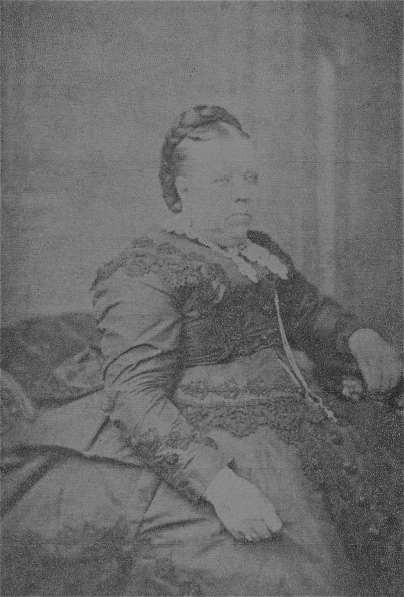
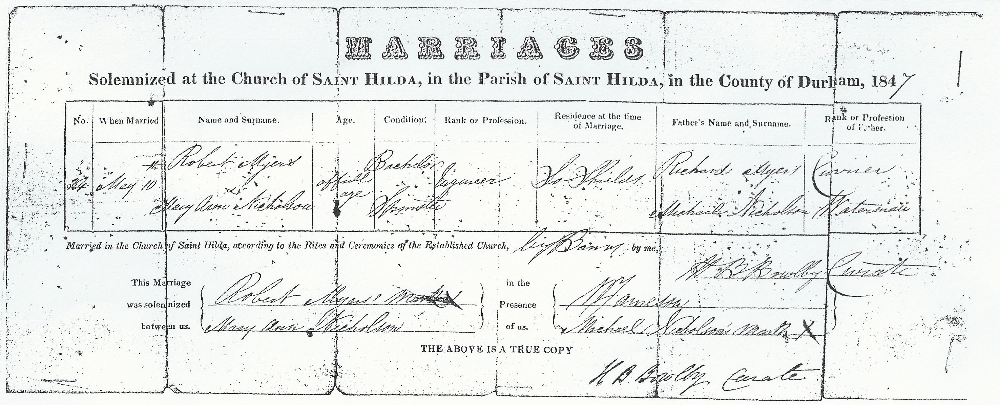

Mary Ann Myers (née Nicholson) 1827 - c1886
[ Home ] | [ Calendar ] | [ Surnames Index ] | [ Family History ]The daughter of Michael Nicholson (a grocer) and Isabella BriscoeMary Nicholson was born in North Shields, Tyne and Wear, England on Jul 24, 18271,2,3 and married Robert Myers (an engine man with whom she had 6 children: Mary, Isabella J N, Thomas Nicholson, Ann, Henry Briscoe Nicholson and Robert, along with 2 surviving children) at St Hilda's Church, South Shields, Tyne and Wear, England on May 9, 18475.
Throughout her life, she lived at Quay, Blyth, Tyne and Wear on Mar 30, 18516; and at North Street in North Shields on Apr 7, 18611.
She died c. Aug 1886 in Tynemouth, Tyne and Wear, England4.
Parents
- Michael was born in 1796
- Isabella was born in 1796
Children
- Mary was born in 1848
- Thomas Nicholson was born c. Nov 1851
- Henry Briscoe Nicholson was born c. Feb 1856
- Robert was born c. May 1861
Citations
- 1861 England, Wales & Scotland Census - Findmypast (was age 34 and the wife of the head of the household)
- England & Wales Non-Conformist Births And Baptisms - Findmypast
- England Births & Baptisms 1538-1975 - Findmypast
- England & Wales deaths 1837-2007 - Findmypast
- England Marriages 1538-1973 - Findmypast
- 1851 England, Wales & Scotland Census - Findmypast (was age 25 and the wife of the head of the household)
Media
Mary Ann Nicholson

Robert Myers Mary Ann Nicholson - Marriage Certifi

England & Wales marriages 1837-2005 - BMD/M/1847/2/HZ/000458/021
England Marriages 1538-1973 - R_855397328/2
England Marriages 1538-1973 - R_848638324/2
Northumberland and Durham Marriages - GBPRS/M/356116375/3
1861 England, Wales & Scotland Census - GBC/1861/0019580311
England & Wales deaths 1837-2007 - BMD/D/1886/3/AZ/000239/147
Family Tree

Generated by ged2site. Last updated on Nov 13, 2024